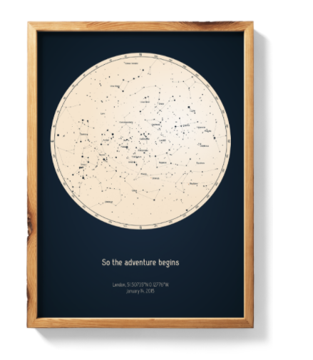

¿Qué es un mapa estelar?
El cielo sobre tu cabeza cambia su imagen de un momento a otro. M-E Laguna mueve al papel el mapa de estrellas de tu momento especial y crea un cuadro de constelaciones personalizado y unico.
Mapa estelar personalizado: Un regalo único
Puedes pedir fácilmente un regalo inolvidable que seguramente traerá una sonrisa a las caras de los destinatarios. Confía en nosotros ¡el número de clientes encantados con los mapas estelares personalizados sigue creciendo con cada instante!
Mapa estelar día concreto
Con nosotros, puedes hacer lo imposible y detener las estrellas con el fin de darle, a la persona única, su propia imagen del cielo! Dinos solo la fecha, el lugar exacto del evento y agrega tus felicitaciones personales. Nosotros nos encargamos del resto. Podemos preparar un mapa estelar desde cualquier latitud, para cualquier ocasión
